Overview
The Lens Flare Editor uses the element-based concept to build customizable flares instead of physically correct ones.
The instance of Flares is bound to light objects. When the Lens Flare item is assigned to a light entity, the proper material for rendering lens flare will be assigned to the light entity.
Important Concepts
There are many parameters for each type of flare element. On the following table, some of the most important and basic concepts/functions will be explained.
Common → Position | The position of the flare effect relative to the light. For example, a value of (1,1) means that the effect will always stick with the light. A value of (-1,-1) means that it should be symmetric with the light in about the center of the screen and (0,0) means that it will sit in the center of the screen and won't move. 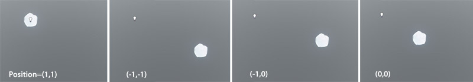 |
Common → Perspective Factor | This property controls how the flares react to the perspective shortening. Intuitively a value higher than 1 means exaggerated perspective whereas a value between 0 and 1 means reduced perspective shortening. Negative values will also work. |
Common → Correct Aspect Ratio | When this is on, the object will always appear in its original shape regardless of the screen aspect ratio. i.e; a circle will not become an ellipse, a square will not look like a wide rectangle. 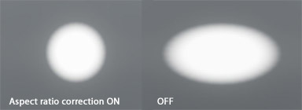 |
Chromatic Ring → Lock To Light | This property tells the renderer to ignore the positioning factor and lets the engine choose the appropriate position for the ring. |
Glow → Focus Factor | Adjusts the density of the lens flare effect. |
Camera Orbs → Enable Lens Detail Shading | Usable only when Lens Texture is enabled. This allows renderer to render a bump-mapped dirt instead of a flat one. Currently the red channel of lens texture is used as heightmap 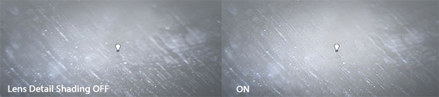 |
Multi Ghost → Scattering Range, Position Factor, Position Offset | These parameters control how the sub-ghosts should be placed. Scattering range tells the max possible start and end diagonal positions for every sub ghost. Position factor is a multiplier for the scattering range, and consists of x-axis factor and y-axis factor. It is the maximum possible offset for every sub-ghost. |
Root Element → Affected By Light Radius | Uses light radius as the flare falloff control, ignoring distance fading factor. This parameter is displayed in the Properties panel, under the Global Settings section when the root element on the Element Tree is selected. |
All → Sensor Image Size Variation Factor | Physical optical effects vary their appearances with different light incident angles and positions. This parameter controls the multiplication factor of how the size of the flare element should be changed when approaching the edge of the screen. For example, 1 means stay unchanged; 0.7 means the flare element will shrink to 0.7 of its original size when at the edge. |
All → Sensor Image Brightness Variation Factor | Same as sensor image size variation factor, but it only affects the brightness instead of the size of the flare element. |
Root → Custom Sensor Variation Map | Sensor image xxxx variation factor uses this map as a soft mask to determine where the fade should happen. Bigger values mean higher fading strength. |
All → Occlusion Interaction | Affects only Ghost, Multi Ghost, CameraOrbs and IrisShafts effects. When this option is enabled, the flare elements will react to how the light source is occluded by its surroundings. |
If enabling an option gives no result, it's best to check if the parent containers also have this option checked. Parameters are chained in hierarchy structure in flare system.
Basic Set
Ghost
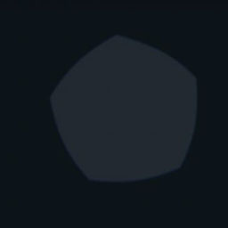
The most common lens artifact in optical flare phenomenons category. It's normally created by internal reflections between different lens glasses.
In CRYENGINE, it's rendered as a textured quad. To save bandwidth, the quad's size is automatically adjusted according to the texture's dimensions.
Multi Ghost
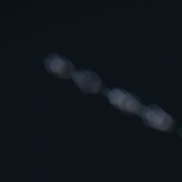
A collection of Ghosts. Its behavior can be controlled by the user via the parameters like Scattering Range, Position Range and Offset Range.
Glow
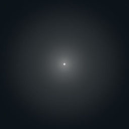
This is actually not a single physical phenomenon. In the optical flare system, this can either be formed by lights scattering in participating media or the lens' internal de-focusing.
In the CRYENGINE optical flare system, it's rendered as a circular polygon with optional gradient texture. It's static and is not a screen space effect.
Chromatic Ring
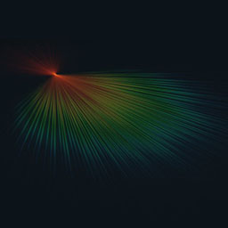
Quite visible with cheap cameras. This phenomenon is the combination of light reflection, refraction and diffraction. CRYENGINE treats it as a hoop shaped aurora and corresponding set of spikes. A spectrum texture can be assigned to the element to mimic the chromatic aberration along the light's path.
Iris Shafts
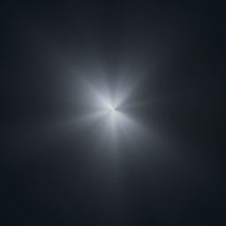
The cause for this effect has some similarities to chromatic ring, as such, both involve diffraction. However, this phenomenon has more to do with the uneven lens surfaces and internal density variation.
CRYENGINE renders this as an array of textured spikes.
Volumetric Shafts
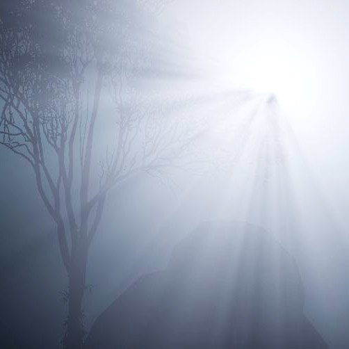
This is not a lens flare effect in a strict sense. Commonly seen on foggy days, volumetric shafts are the result of the light scattering the air.
This is approximated as a screen space effect. Off-screen volumetric shafts cannot be achieved by using this flare type.
Camera Orbs
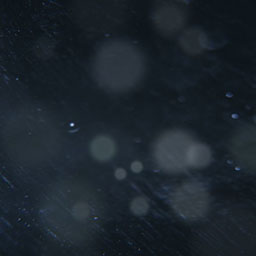
This is a simple phenomenon from the Bokeh of on-lens dirt or scratches. This effect can be heavy on graphics performance due to potential overdraw areas.
Optionally, a dirt texture illuminated by near lights can be enabled to simulate dirt/scratches on visors or lens filters instead of the lens glass itself.
Presets
Sample presets
Sample presets are provided with the GameSDK inside of the GameData.pak archive at the path Libs\Flares\sample_flares.xml. Each of these examples demonstrates different aspects of the parameter combinations. Playing with the presets is the best way to get familiarized with this system.
Sometimes the streaks appear very thick unlike the images shown below. This is caused because of the perspective factor settings. Try to move away from the light to a proper distance; the thickness should be normal.
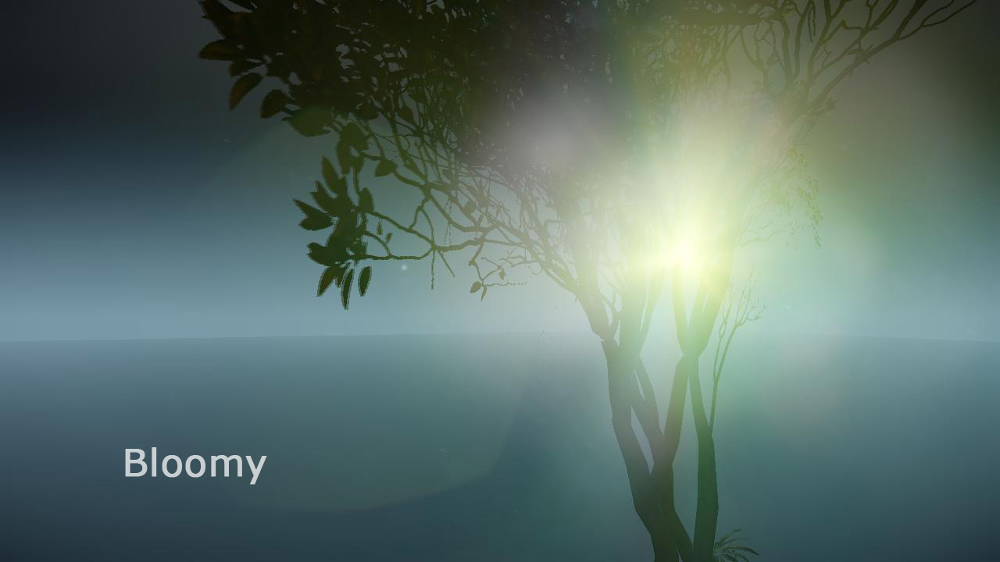 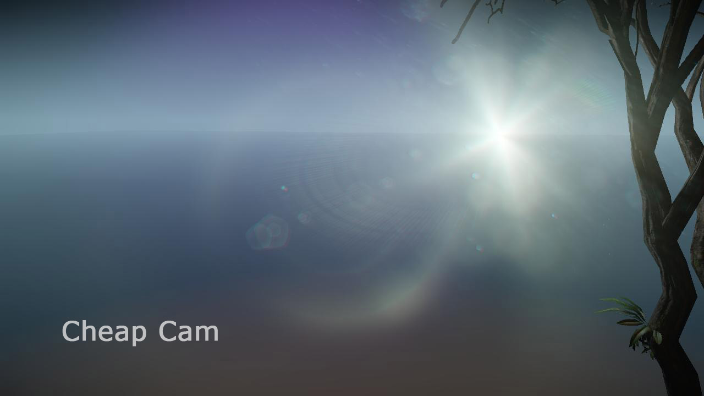 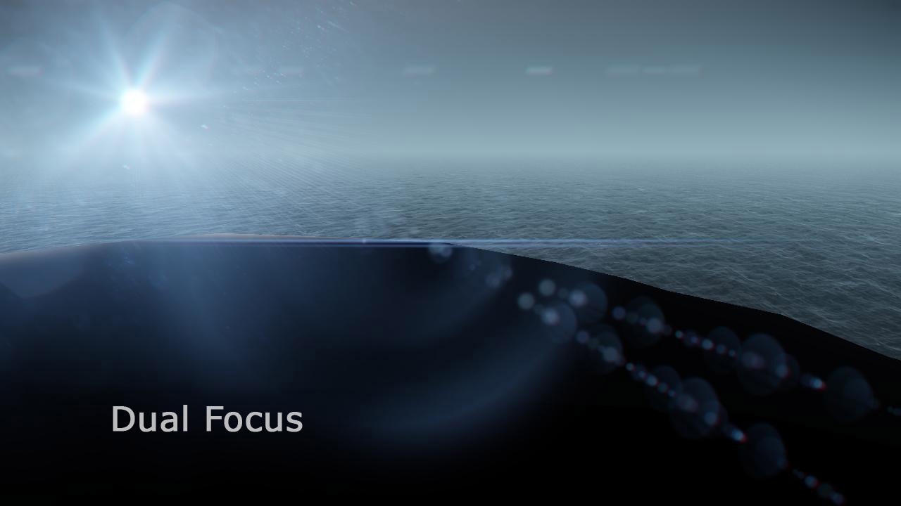 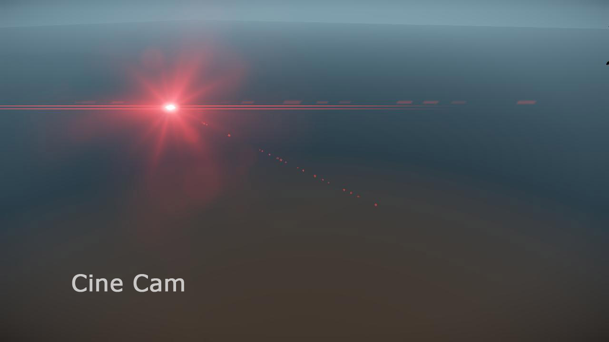 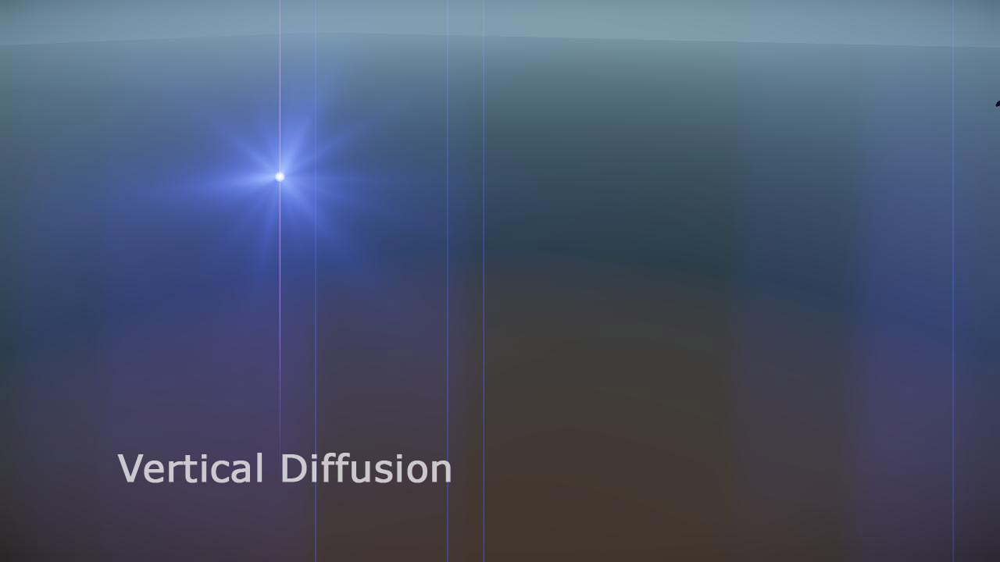
Extra Variations
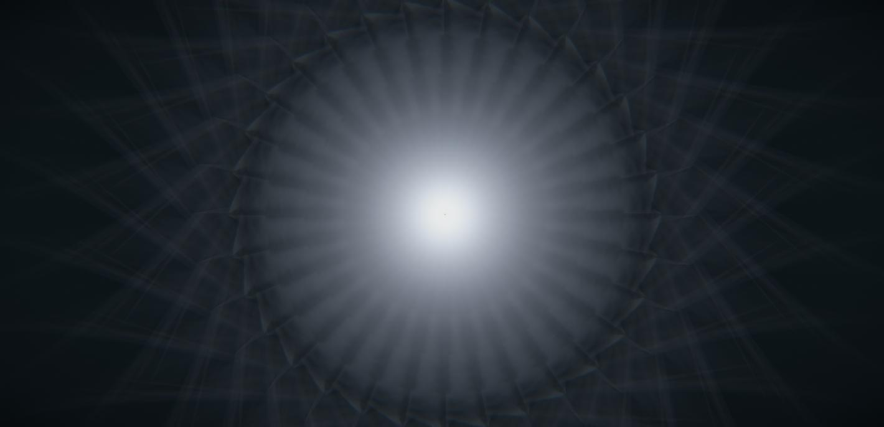 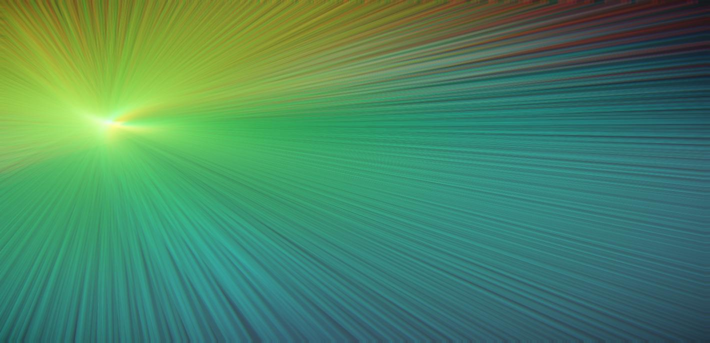 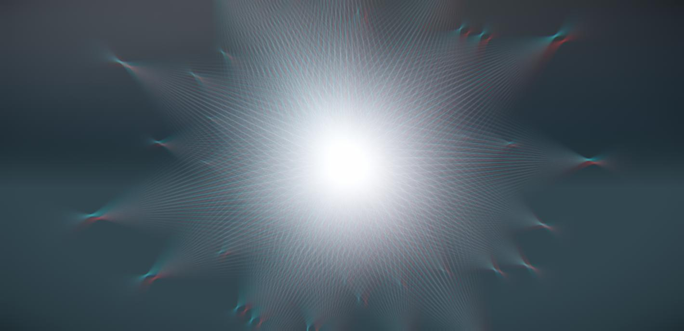
Many different variations of lens flare effects can be achieved by using Lens Flare Editor elements and combining them.